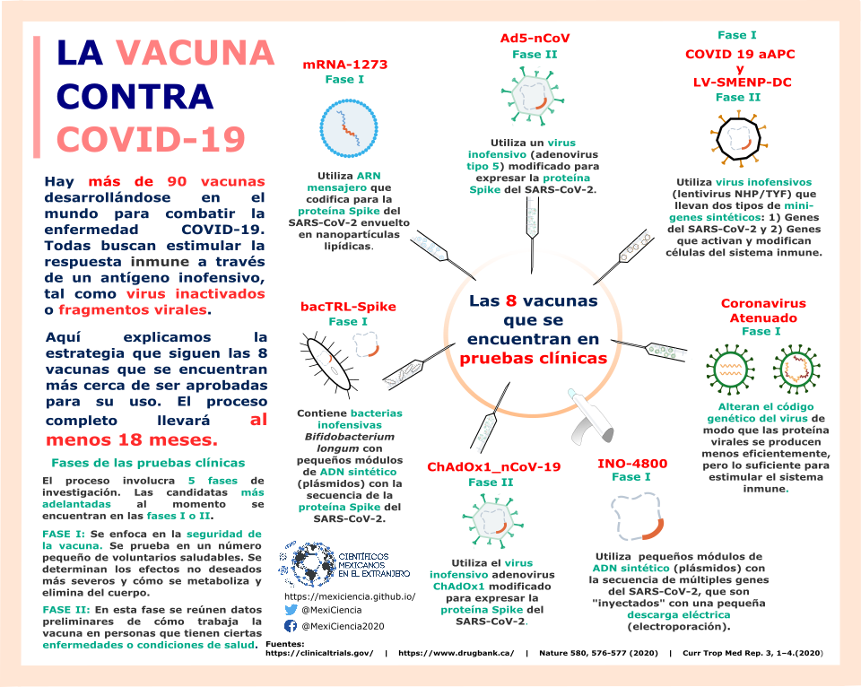

Para la contención de la propagación de la enfermedad COVID-19, ocasionada por el virus SARS-CoV-2, hasta el momento no existe ningún tratamiento cuya efectividad esté demostrada ni se cuenta con una vacuna que prevenga su diseminación. Por tal motivo, los gobiernos de todo el mundo deben tomar decisiones difíciles, cuyas consecuencias impactan la forma de vida de las personas. Ellos deben equilibrar entre el riesgo a la salud y el daño a la economía.
Lo que nos permitirá regresar a la forma de vida lo más cercana posible a como la conocíamos antes de esta pandemia será lograr que un alto porcentaje de la población genere inmunidad contra el virus. Esto se puede lograr por dos vías:
- Dejar que la enfermedad se propague libremente hasta que eventualmente un 80% de la población que sobreviva la haya padecido y superado.
- Inducir inmunidad a ese porcentaje de la población por medio de una vacuna.
Dado que los efectos de la enfermedad en la población de riesgo son devastadores, la vía de la inmunidad por medio de vacunas es la más ética. En ese sentido, es crucial evitar las reacciones secundarias para la población, con lo cual se garantice que los efectos negativos sean menores que la exposición al virus. Por lo mismo, desarrollar vacunas es un proceso laborioso, complejo y tardado.
El desarrollo de vacunas consta de dos partes, la fase preclínica (experimentos en células, tejidos y modelos animales) y la fase clínica (ensayos en humanos).
La fase clínica involucra 5 fases de investigación:
PREFASE I: Fase utilizada para describir los ensayos exploratorios realizados antes de los ensayos tradicionales de fase 1, para investigar si afectan al organismo y de qué forma. Implica una exposición humana muy limitada y no tiene objetivos terapéuticos.
FASE I: Se enfoca en la seguridad de la vacuna. Se prueba en un número pequeño de voluntarios saludables. Se determinan los efectos no deseados más severos y cómo se metaboliza y elimina del cuerpo.
FASE II: En esta fase se reúnen datos preliminares de cómo trabaja la vacuna en personas que tienen ciertas enfermedades o condiciones de salud.
FASE III: Fase en donde se describen ensayos clínicos que recopilan más información sobre la seguridad y efectividad mediante el estudio del efecto en diferentes poblaciones, diferentes dosis y al usarse en combinación con otros medicamentos. Estos estudios generalmente involucran un número mayor de participantes.
FASE IV: En esta fase se describen los estudios realizados después de que se ha aprobado para su comercialización. Estos estudios recopilan información sobre la seguridad, eficacia o uso óptimo. Además, incluyen requisitos de posventa y compromisos que son requeridos y acordados por el patrocinador del estudio.
Para la enfermedad COVID-19, las vacunas candidatas más adelantadas al momento se encuentran en las fases I o II. En esta figura se resume su diseño:
